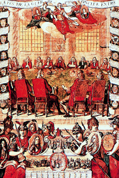

Lezione 13  Imperi Coloniali
Imperi Coloniali

-
138
452
-
185
195
-
300
490
-
180
630
-
150
422
-
201
225

UTRECHT
In questa incisione colorata tratta dall’Almanach Royal del 1714 vediamo la firma della pace di Utrecht, conclusasi con grandi vantaggi i per l’Inghilterra, che entrò in possesso, tra gli altri territori, di Gibilterra e dell’isola di Terranova.AMERICA
Il salone di Wurzburg, affrescato da Giovanbattista Tiepolo, è senz’altro la più potente immagine dipinta dell’imperialismo europeo: in questo particolare vediamo un’allegoria dell’America, rappresentata come una splendida donna india che cavalca un alligatoreAFRICA
Nell’allegoria dipinta da Giovanbattista Tiepolo nel 1750 l’Africa è simboleggiata da una donna nera.ASIA
L’Asia raffigurata nel salone di Wurzburg dalla pittura monumentale ed ariosa di Giovanbattista Tiepolo.INGHILTERRA
Verso la fine del 1700 l’Inghilterra ha la flotta più grande d’Europa.NORD AMERICA
1763: La Guerra dei sette anni segna il trionfo dell’Inghilterra sulla Francia. A partire da questo momento viene ridisegnata, a favore dell’Inghilterra, la mappa del potere coloniale mondiale.